Cost of Living Estimator
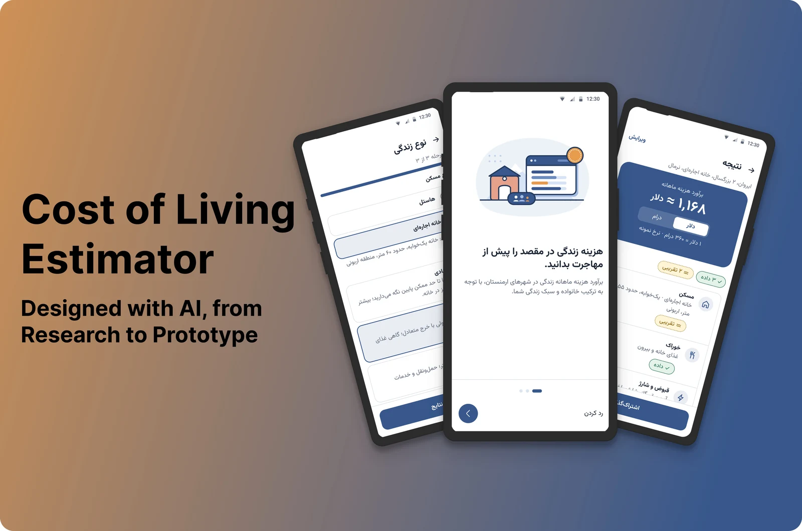
- Role
- UX/UI Designer & Product Designer
- Duration
- 1 week
- Tools
- Figma, Figma AI, Claude, Google Meet, Telegram
Cost of Living Estimator is a mobile app concept for people planning to move to Armenia who want a clearer picture of living costs before making a decision. I used AI tools at different stages of the design process to practice end-to-end product design and explore how AI can support real design work.
Problem & Goal
The goal was to design a simple and trustworthy experience that helps people estimate living costs in Armenia based on their situation, while also showing how reliable each cost estimate is.
The numbers shown in the design (including $1,168 and an exchange rate of 360 AMD) are examples only and are not verified living-cost data for Armenia.
Process
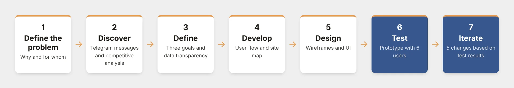
Discovery
I started with questions and discussions in a Telegram group for Iranians interested in moving to Armenia. By reviewing the messages, I collected common concerns about living costs and moving expenses. I treated these messages as early signals to guide the problem, not as representative data about all migrants.
Telegram Messages
Examples of questions shared by members (names removed):
“Hi, how much does it cost to live in Armenia per month, including rent?”
“Does 250,000 AMD cover monthly expenses for two people?”
“The first month is probably more expensive. About how much does it cost?”
“I made a rough monthly cost list for one person… Does it look right?”
These messages suggested a need to estimate both everyday living costs and the expenses of settling in. I used them to identify topics that needed further exploration.
Message Categories
| Category | Related Messages | Possible Need / Problem |
|---|---|---|
| Overall living cost estimate | 1, 3, 5, 7, 8, 9 | Unsure how much budget is needed to live in Armenia |
| Food costs | 4, 7, 10 | Monthly food costs |
| Housing costs | 1, 6, 10 | Rent and additional housing costs |
| Transportation | 4, 10 | Transportation costs |
| Communication | 4 | SIM card and internet |
| Initial costs | 6 | Why the first month costs more |
| Education | 5, 6 | Language classes |
| Other | 10 | Costs outside the main categories |
| Comparing locations | 11 | Differences between Yerevan and other cities |
Patterns I Identified
- Uncertainty about monthly budget: Before moving, people need a general estimate of how much living in their new location may cost.
- Initial setup costs: The first month may include a deposit, fees, temporary accommodation, and essential items—expenses that may not repeat in later months.
- Costs depend on personal circumstances: Budget varies by household size, city, housing type, and lifestyle, so one general estimate may not work for everyone.
Competitive Analysis
I reviewed LivingCost, Wise, and Numbeo to understand existing solutions. LivingCost supports household-based estimates and city comparisons; Wise presents costs in a clear visual format; and Numbeo offers a wide range of city data. This review helped me identify an opportunity for a simpler experience that explains costs based on destination, household size, housing type, and lifestyle.
Problem Definition & Scope
Based on the early observations and competitor review, I defined three main user needs:
- A. Monthly living costs in a city
- B. Initial moving costs(addressing first-month expenses)
- C. Compare two cities(including options outside Yerevan)
Design Principle: Data Transparency
Living costs depend on different factors, and not all figures have the same level of reliability. I made data transparency a key design principle. Each cost is marked as one of three statuses: Data, Approximate, or Unknown These statuses are not shown through color alone; text, icons, and line styles also help communicate them.
Development
User Flow
I designed a shared step-by-step selection flow for the three goals to collect the information needed for each estimate. For the initial-cost scenario, the flow ends with housing type selection.
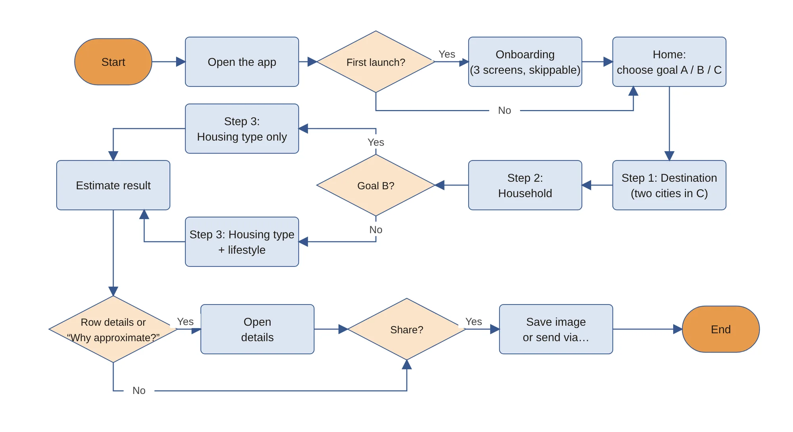
Site Map
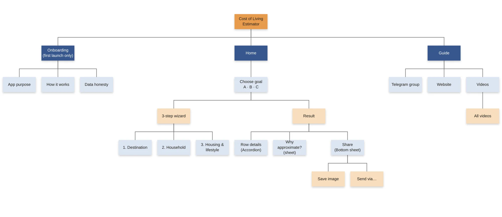
Design & Testing
Wireframes
Before visual design, I created wireframes for the main screens and flows to review the information structure and interaction logic.
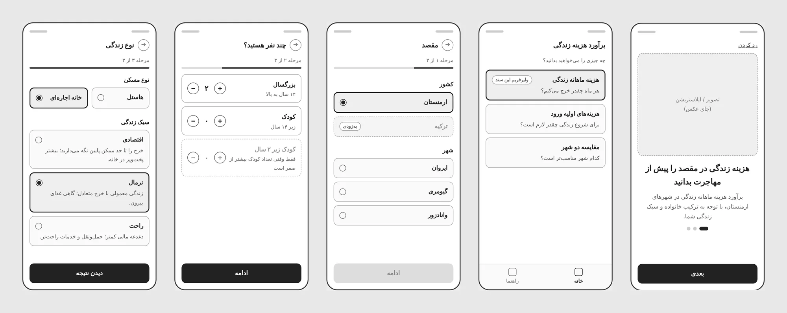
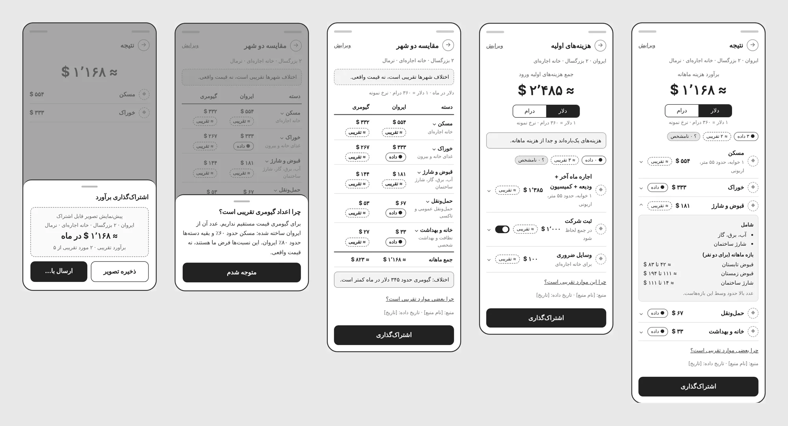
UI Kit
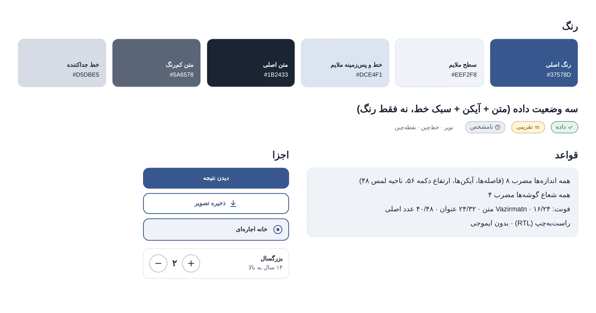
Selected Design Frames
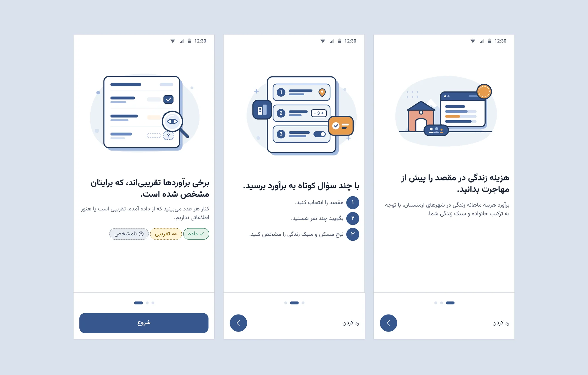
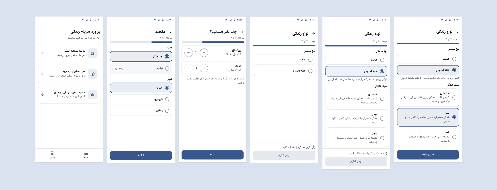
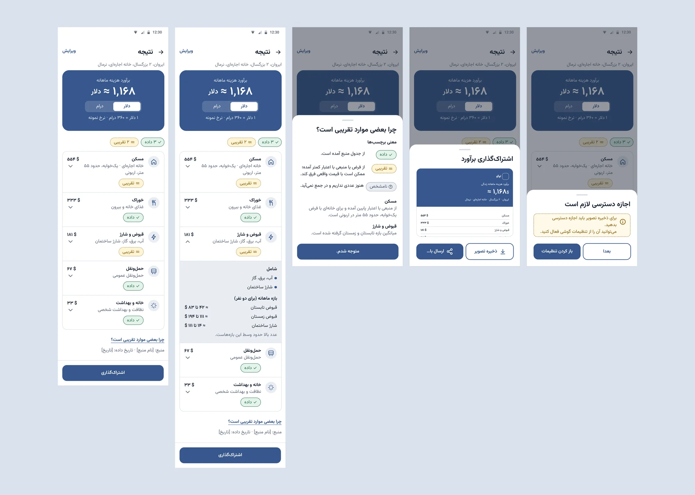
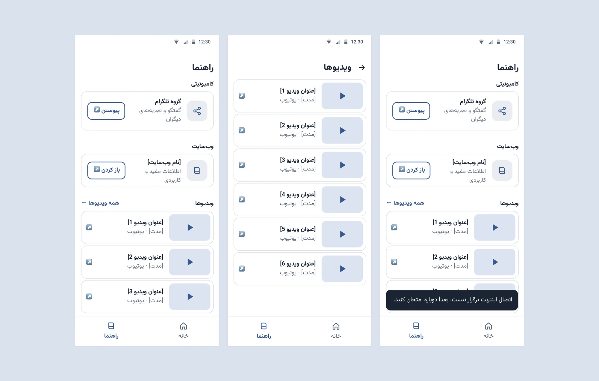
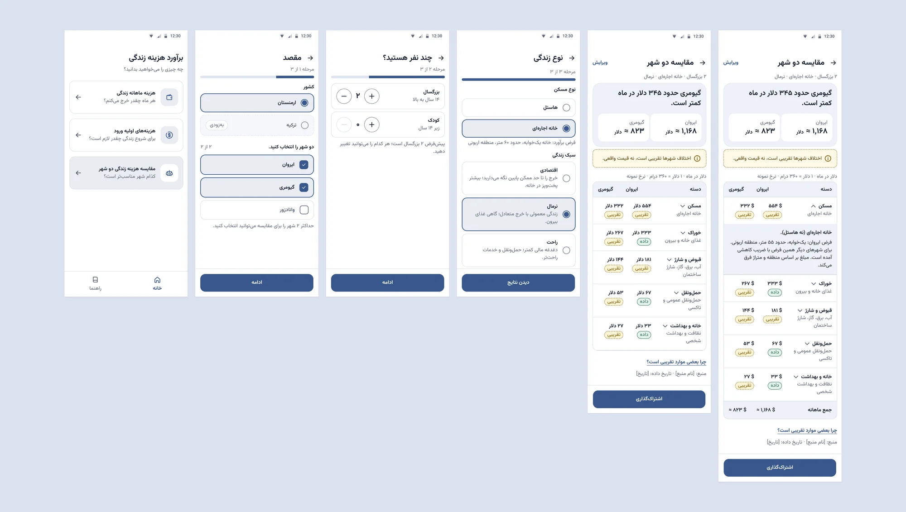
User Testing
I used Figma AI to turn the designs into a testable prototype and tested it with six Iranians who planned to move to Armenia within the next five months. Participants were recruited from the same Telegram group. I tested three main scenarios:
- Find the estimated cost of living for one month in Yerevan.
- Find winter utility costs.
- Compare living costs in two cities.
Participants completed the first two scenarios without major issues. However, testing revealed some problems with information readability, finding results, and understanding interactions. I used this feedback to make the following design changes:
- Making the currency easier to recognize. Two participants paused at the main amount because they did not notice the currency unit at first. Since the currency symbol was shown in a smaller size, I replaced it with a written unit beside the amount so the number and unit could be read together.
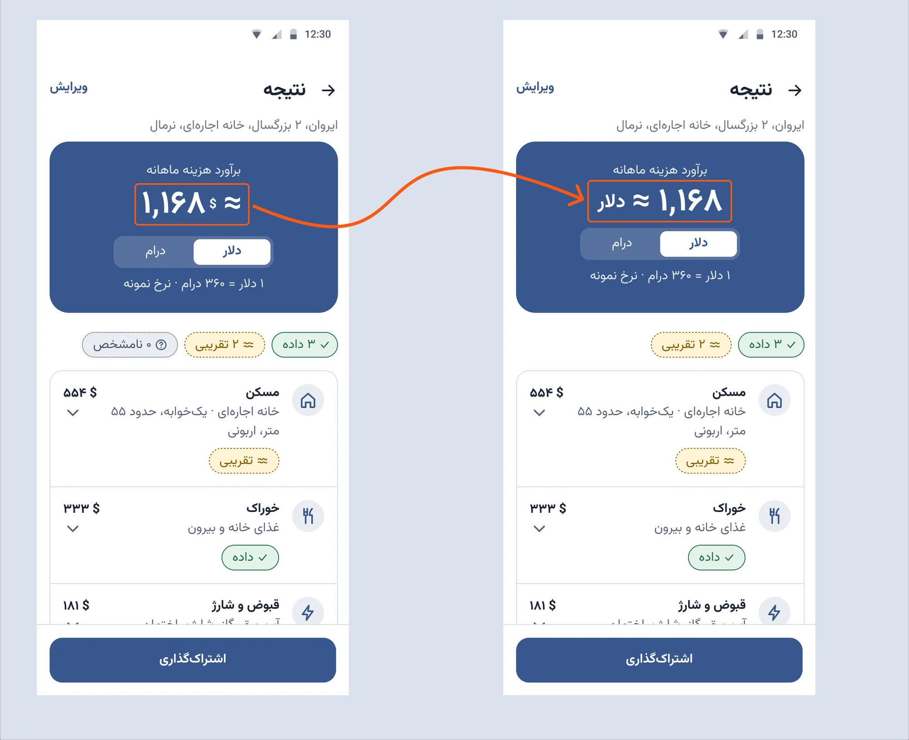
- Removing zero-value chips. Three participants said chips with zero values did not add useful information. I removed them to make the summary cleaner and keep relevant information in focus. Meaningful statuses are still shown.
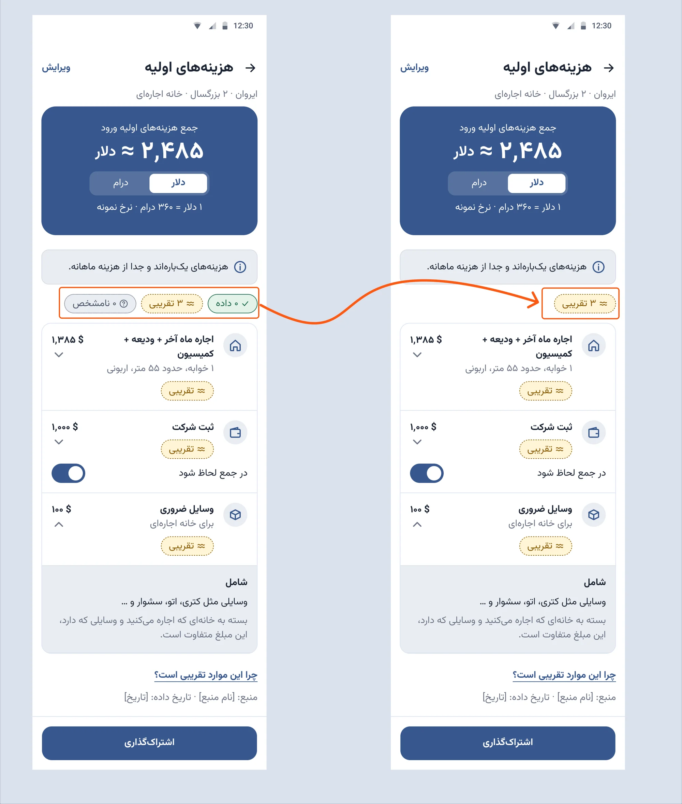
- Showing comparison results at the top. Four participants expected to find each city’s total cost quickly, but in the first version, totals were at the bottom of the table and required scrolling. I moved the comparison summary and both city totals to the top so users see the result before the details.
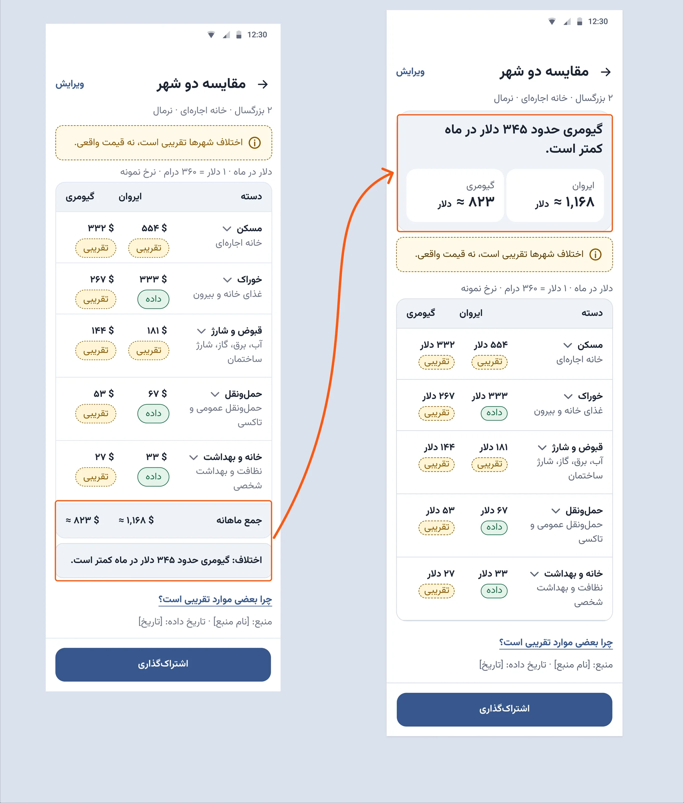
- Explaining data labels. Users could partly understand the “Data,” “Approximate,” and “Unknown” labels, but suggested making their definitions available. I added a short explanation of all three labels to the “Why approximate?” modal so users would not have to remember them from onboarding.
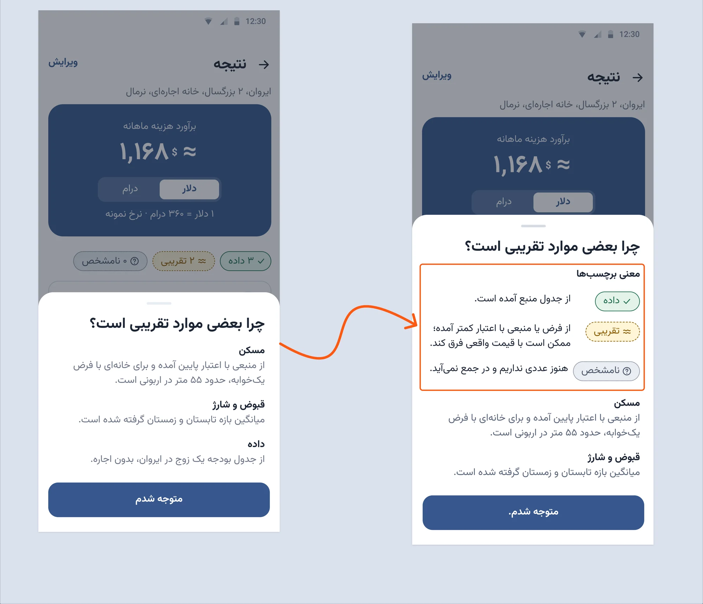
- Splitting the final step and explaining the disabled button. Housing type and lifestyle, two independent decisions with five options in total, were shown on the same screen, and the “See Results” button was disabled without any explanation, leaving users unsure what they needed to do to continue. I moved lifestyle selection to the next step, after users choose their housing type, and added a short guidance message below the disabled button that disappears once all required selections are made. This applies Progressive Disclosure, presenting information and options step by step to reduce cognitive load at each stage, and Visibility of System Status, since explaining why the button is disabled helps users understand what is required and prevents confusion.
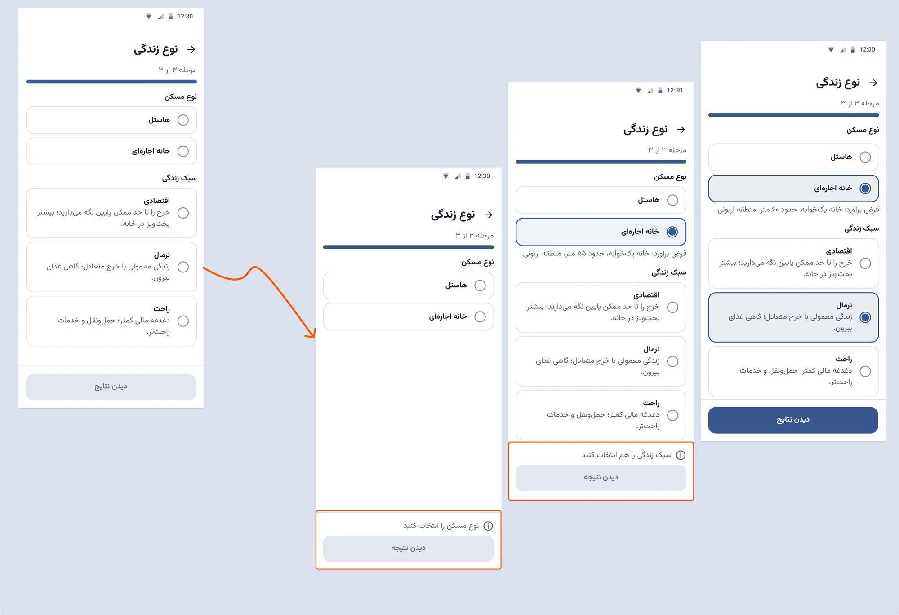
Next Steps
- Run usability testing with more participants. The five iterations came from sessions with six people, so the next step is a second round with a larger group, using the same tasks to check whether the issues I fixed are actually resolved and to increase confidence in the results.
- Validate the estimates with real data. Some of the numbers in the design are examples. I would collect real prices from reliable sources and from the community itself, then review which costs deserve the Data, Approximate or Unknown status, since data transparency is the core idea of the product.
- Check accessibility. The data statuses are communicated through text, icons and line styles, not color alone. I would back this up with contrast checks and testing with a screen reader.